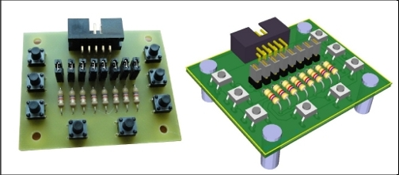
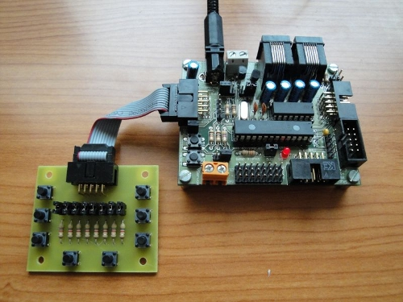

Ya tenemos el primer PCB prototipo de la Skypads 1.0. Es una tarjeta con 8 pulsadores de prueba que se conecta a cualquiera de los puertos de la Skypic (A,B ó C). Es muy útil para hacer pruebas o convertir la Skypic en una entrenadora para aprender a programar los microcontroladores PIC.
En esta foto la podéis ver conectada al puerto C de la Skypic. Junto con la freeleds, hacen una combinación perfecta para depurar aplicaciones y aplicar la Skypic a la docencia.

Por supuesto, la Skypads es hardware libre2, diseñada con Kicad. Todos los esquemas están disponibles en su página.
Os recuerdo que la Entrenadora que estamos haciendo en ARDE los módulos son compatibles con la Skypic y es hardware libre (sin el 2) también.
S2
Ranganok Schahzaman
Hola Ranganok,
Estupendo! Que los módulos se puedan reutilizar entre diferentes placas es genial!! 🙂
Que los módulos no sean hardware libre 2 no es problema. Son hardware libre, por tanto cualquiera los puede modificar y re-hacerlos con una herramienta libre para que sean hw2